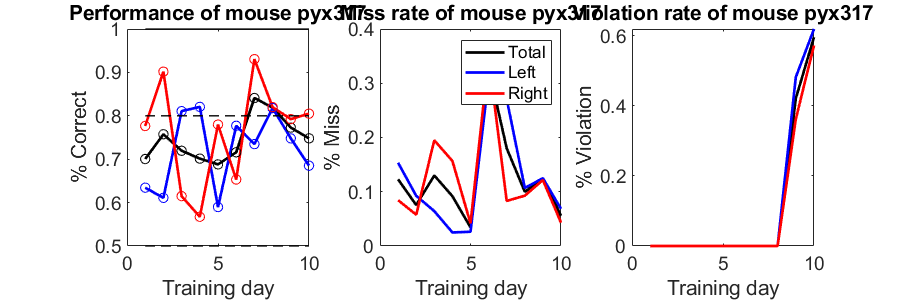
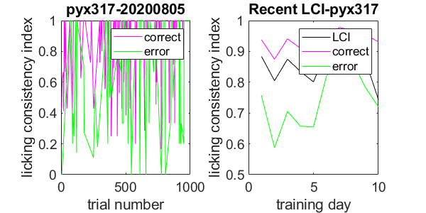
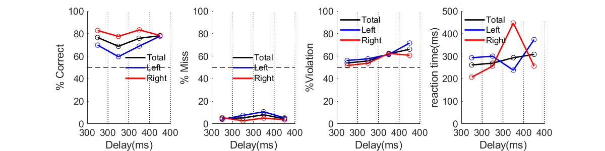

Contents
close all;
clear;
path='D:\xulab\behavior';
ndelaygroup=4;
date='2020_08_05';
animal='pyx317';
fileFolder=[path, filesep,animal];
npast=10;
plot performance in recent trainning days
[animal_name,dataChoice]=fFindChoice(fileFolder,npast);
figPerformance=fPlotCorrectRate(animal_name,dataChoice,npast);
saveas(figPerformance,[fileFolder,filesep, animal_name,'.png']);
set(figPerformance, 'position', [0 50 900 300]);

plot licking consistency index
figLCI = fPlotLickConsistency(path,date,animal,npast);
set(figLCI, 'position', [900 50 600 300]);
Warning: Specified session not exist, using last session

plot different delay performance
figDiffDelay = fPlotDiffDelay(ndelaygroup,path,date,animal);
set(figDiffDelay, 'position', [0 400 1200 300]);
Warning: Specified session not exist, using last session: pyx317_20200805.mat
